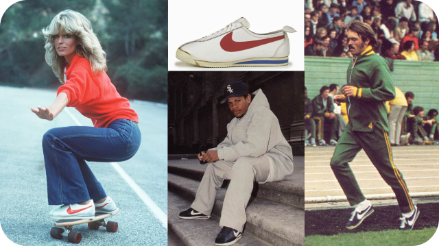

В мире спортивной обуви модные тенденции меняются почти так же быстро, как и в мире высокой моды. Сегодня мы поговорим о самых актуальных тенденциях сезона, которые помогут вам не только чувствовать себя комфортно во время занятий спортом или прогулок, но и выглядеть стильно и современно.
1. Возвращение классики
Классические модели, такие как Adidas Stan Smith или Nike Air Force 1, вновь на пике популярности. Эти кроссовки легко узнаваемы, их любят и ценят за комфорт и универсальность. Они отлично сочетаются как с спортивной, так и с повседневной одеждой, делая любой образ актуальным и модным.
